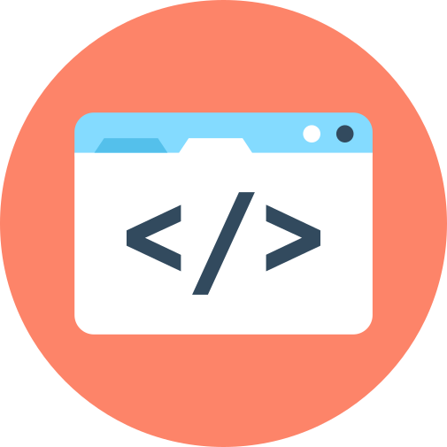

Stilize
O Stilize é um framework CSS feito em SASS e Typescript para desenvolver páginas com mais facilidade e agilidade.
DownloadDesenvolva páginas que se adaptam a todos os dispositivos móveis garantindo que independente do dispotivo de acesso seu site não irá perder a identidade.
Faça com que o desenvolvimento de suas páginas sejam rápidos e simples, com uma grande variedade de componentes para lhe auxiliar durante a criação de seus sites.

Desenvolvido com SASS e Typescript, as linguagens mais novas do mercado para que a manutenção seja simples e o framework tenha os recursos necessários para atender a todos.
Comece a usar
Para utilizar o framework é muito simples, siga os passoa á baixo:
- Faça o download do arquivo .zip.
- Extraia o conteúdo do arquivo para uma pasta em seu projeto.
- Realize a importação dos arquivos .css e .js.
- Tudo pronto para começar a usar, confira a documentação aqui.
<link href="PASTA_EXTRAIDA/stilize.min.css" rel="stylesheet" type="text/css">
<script src="PASTA_EXTRAIDA/stilize.min.js" type="text/javascript"></script>